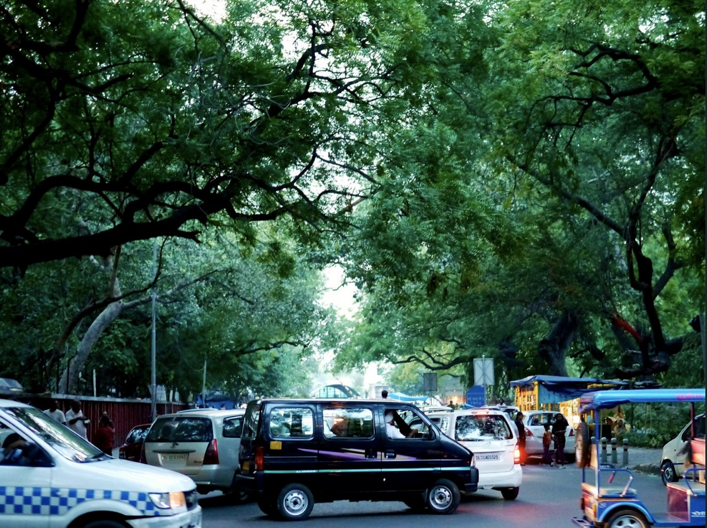
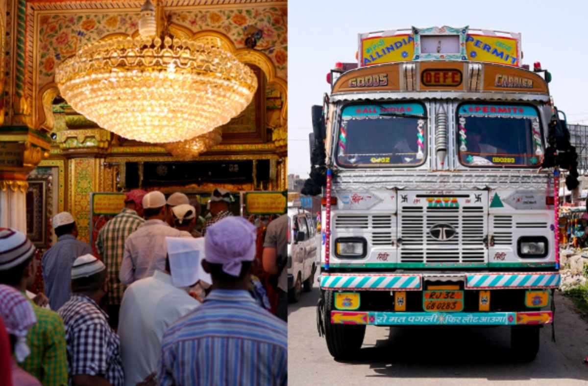
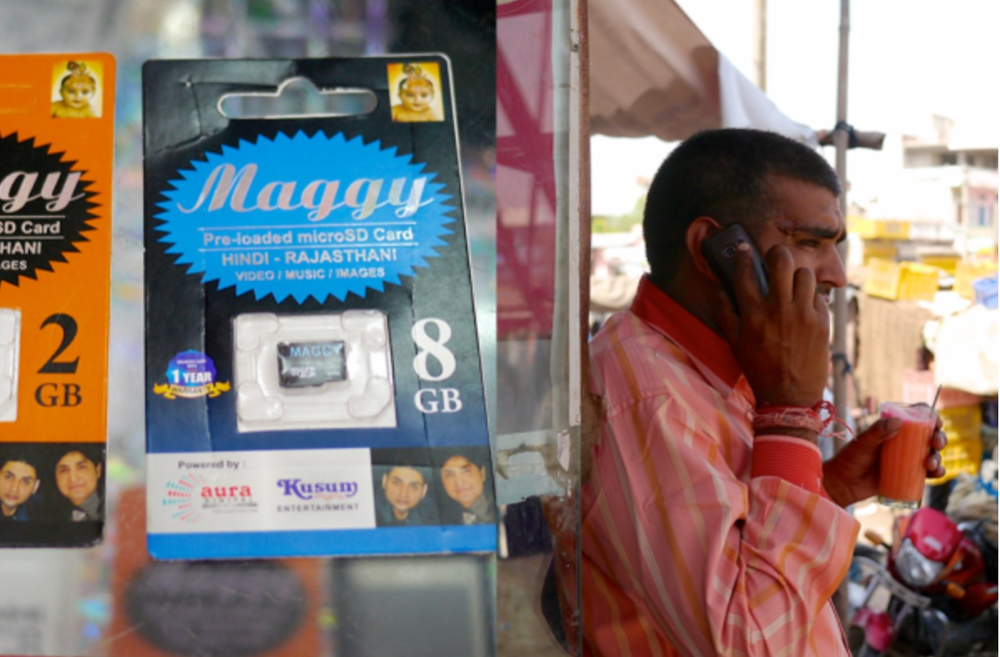

Mobile Operating System Research in Northern India

This research was led by Cori Schauer & Gemma Petrie.
Last month, Mozilla traveled to India to conduct user research on mobile usage. We are grateful to our talented research partners Dear and Tazurba International for their expert local knowledge, to the amazing Delhi and Rajasthani Mozilla communities who provided critical logistics and translation support, and to the many Mozilla staff members that took time out of their busy personal and professional lives to join us in the beautiful (and blazing hot!) Indian summer.
Field Team
The Mozilla User Research team believes it is important to bring a wide variety of colleagues into the field with us for research. We know that first-hand experience does more to build empathy and understanding than a presentation ever will. This trip marked our largest field team to date and included:
Jared Cole, Design Strategist
Francis Djabri, FxOS UX Designer
Peter Dolanjski, FxOS Product Manager
Sandip Kamat, FxOS Product Manager
Bruce Huang, FxOS Product Manager
Juwei Huang, FxOS UX Designer
Elizabeth Hunt, Marketplace UX Designer
Jane Hsu, FxOS Go-To-Market Strategy/Partnerships
Rina Jensen, Content Strategist
Amy Lee, FxOS Visual Designer
Peiying Mo, L10N Program Manager
Arky, L10N & Community Rep
Rob Rayborn, User Advocacy

Research Plan
We aimed to answer the following questions with our research:
Who are the people in our target market(s) in India?
What motivates someone to purchase a mobile device?
What can Mozilla enable people to do with a Firefox OS device?
How can Mozilla make a difference?
India is a vast and varied country and it was difficult to design a research approach that would cover multiple regions with adequate depth in the time we had available. We decided early on to focus this initial phase of our India research program in the north, specifically in Delhi, rural Rajasthan, and Jaipur.
This research used a variety of methodologies to gather data. We conducted one-on-one interviews in Delhi and Jaipur and worked with community members and local researchers to meet with local families, shopkeepers, and visit rural villages. In addition, we also conducted informal ethnographic observation during our two weeks in India.

Ethnographic Observation
One of our primary goals was to immerse our field team in Indian daily life and culture. Our large group and broad geographic research area presented some initial challenges during our planning stage. We made the decision to engage dscout to bring some order to our data collection and help field team members that were new to research think about how to capture and analyze their experiences.
We split each day into two modules with different themes like phone stores, mobile content, or family. We then divided our field team into small groups, accompanied by Mozilla community members, to explore different areas. Each group added photos, videos, and answers to a few short questions to dscout, allowing us to quickly gather a large amount of structured information on each theme. This data, combined with our team's first-hand field experiences, provided a valuable contextual foundation for our research.
Mobile Open Houses
We conducted one-on-one interviews with 55 recruited participants at "Open House" events in Delhi and Jaipur. The interviews were split into four main topic areas: Current phone and technology usage, phone purchasing process, mobile content, and Firefox OS device user testing.